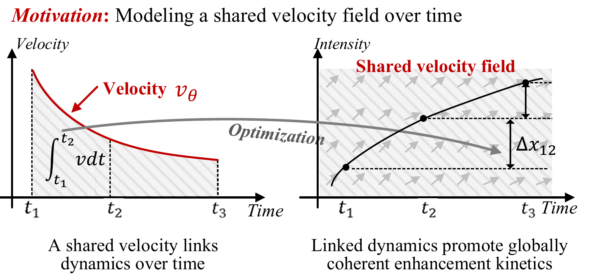
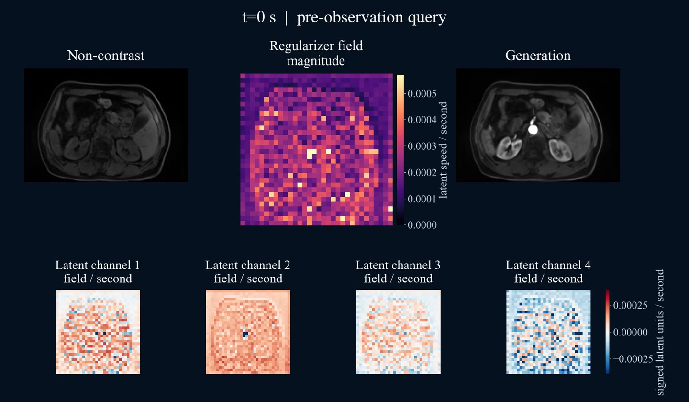

Latent Velocity-Field Modeling for MRI Contrast Enhancement Kinetics World Model
1 Case Western Reserve University, Cleveland, OH, USA
2 Jiangsu Cancer Hospital, Nanjing, Jiangsu, China
* Corresponding author
Limitation: Local Smoothness, But Fragmented Kinetics
Existing methods utilize smoothness regularization, but struggle with fragmented kinetics. They impose constraints on predicted states or their temporal differences at discrete observed time points to promote temporal smoothness. However, these constraints regularize changes between neighboring time points without explicitly linking enhancement dynamics across different temporal intervals. Thus, the predictions remain locally smooth but exhibit incoherent transitions between intervals, resulting in fragmented kinetics, such as abrupt intensity changes across temporal intervals.
Motivation：Modeling a shared velocity field over time
Motivation: Modeling a shared latent velocity field over time is essential to promote globally coherent contrast enhancement kinetics by linking state evolution across temporal intervals. Sparse observed state changes constrain the accumulated latent velocities within temporal intervals. By jointly constraining the same velocity function across different intervals, sparse observations provide not only supervision of discrete states but also constraints on the underlying latent kinetics within unobserved intervals, thereby promoting coherent enhancement evolution over time.

Results
Explore predictions and velocity fields at any time, including extrapolation, by playing the video or dragging the timeline.
